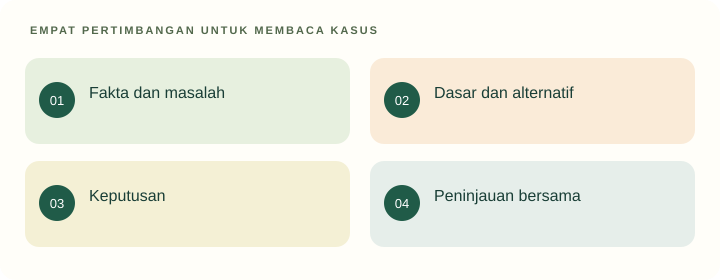

Tujuan pembelajaran
- Membedakan fakta, interpretasi, dan informasi yang belum tersedia.
- Menyusun keputusan dengan alasan konseptual, normatif, dan yuridis.
- Menetapkan tindak lanjut serta batas kewenangan pendidik.
Bagaimana mengambil keputusan ketika kebutuhan anak, tuntutan orang tua, dan kebijakan lembaga bertentangan?
Seorang anak sering meninggalkan kegiatan menulis. Orang tua meminta hukuman agar anak siap SD. Guru melihat anak bersemangat ketika bermain peran tetapi belum mencatat situasi secara sistematis. Kepala RA meminta solusi cepat dan laporan perkembangan.
Temukan persoalan konseptual
Sebelum membaca penjelasan, pisahkan kejadian yang dinyatakan dalam kasus dari dugaan Anda. Gunakan pertanyaan berikut untuk menyiapkan analisis.
- Apa tujuan pendidikan yang sedang dipertaruhkan?
- Pengalaman apa yang dialami anak, dan informasi apa yang belum tersedia?
- Konsep atau jenis sumber apa yang diperlukan untuk menilai tindakan pendidik?

Profesionalisme sebagai tanggung jawab
Profesionalisme tidak hanya berarti mampu membuat kegiatan atau menguasai aplikasi. Pendidik bertanggung jawab atas alasan tindakan, kualitas hubungan, ketepatan informasi, dan kesediaan memperbaiki praktik. Ia bekerja bersama keluarga dan rekan, menjaga kerahasiaan, serta mengenali batas kompetensi.
Mahasiswa perlu berlatih mengatakan belum cukup informasi ketika memang demikian. Ketidakpastian tidak menghentikan semua tindakan: guru tetap dapat menjaga keselamatan, memberi dukungan awal, dan mengumpulkan informasi yang relevan. Yang dihindari ialah keputusan berat berdasarkan label atau dugaan yang belum diperiksa.
Dari fakta menuju masalah
Mulai dengan deskripsi: kapan anak meninggalkan kegiatan, apa yang terjadi sebelumnya, apa yang ia lakukan sesudahnya, dan situasi ketika ia bertahan. Pisahkan dari interpretasi seperti malas atau tidak siap sekolah. Tentukan masalah pendidikan yang dapat ditangani, misalnya kesesuaian tuntutan kegiatan dan kesempatan partisipasi.
Jangan langsung menyusun penjelasan tunggal. Kesulitan dapat berkaitan dengan minat, tuntutan motorik, bahasa instruksi, durasi, atau relasi. Ini adalah kemungkinan untuk diperiksa, bukan diagnosis. Informasi keluarga dan pengamatan beberapa kesempatan membantu memperjelas kebutuhan.
Membandingkan alternatif
Alternatif perlu dibandingkan berdasarkan tujuan, hak anak, kemungkinan manfaat, risiko, dan kelayakan. Mengurangi tuntutan sementara, menyediakan pilihan alat, menghubungkan kegiatan dengan bermain peran, atau memberi contoh singkat merupakan usulan yang perlu dicocokkan dengan informasi. Menolak hukuman yang merendahkan tidak berarti mengabaikan tujuan belajar.
Gunakan teori untuk menjelaskan mekanisme yang diharapkan, regulasi untuk batas dan kewajiban, serta penelitian untuk klaim empiris yang sesuai. Jangan menumpuk sitasi yang tidak berhubungan. Satu alasan yang jelas lebih kuat daripada daftar tokoh tanpa penjelasan.
Tindak lanjut dan refleksi
Keputusan yang baik memuat cara meninjau hasil. Tentukan perilaku atau pengalaman yang akan diamati, kapan dibicarakan kembali, dan siapa yang perlu terlibat. Jika dukungan belum membantu, tinjau asumsi dan pertimbangkan konsultasi sesuai prosedur lembaga. Guru tidak membuat diagnosis medis atau psikologis dari tugas kuliah.
Refleksi profesional memeriksa tindakan pendidik: kesempatan apa yang telah diberikan, siapa yang masih terhambat, dan apa yang perlu diubah. Portofolio mahasiswa dapat memuat kasus, alasan keputusan, contoh bukti, serta revisi setelah menerima masukan. Perubahan keputusan karena bukti baru merupakan bagian dari tanggung jawab, bukan kegagalan otomatis.
Kembali ke kasus
Langkah pertama ialah menolak pelabelan dan mengumpulkan pengamatan yang relevan sambil memberi dukungan awal. Jelaskan kepada keluarga bahwa kesiapan pendidikan lebih luas dari ketahanan menulis. Usulkan penyesuaian, tentukan bukti respons, dan jadwalkan peninjauan tanpa menjanjikan hasil seragam.
Analisis ini merupakan contoh penalaran pedagogis. Pada situasi nyata, keputusan memerlukan informasi tentang anak dan konteks lembaga.
Latihan terbimbing
Gunakan urutan: fakta, masalah, dasar, alternatif, keputusan, peninjauan. Pada bagian dasar, bedakan satu konsep, satu nilai, dan satu regulasi. Sebutkan informasi yang masih kurang.
Latihan mandiri
Susun memo keputusan 600–800 kata atas kasus pembuka. Gunakan minimal tiga sumber dengan fungsi berbeda. Sertakan dua alternatif, pilihan beralasan, rencana pengamatan, serta batas kewenangan. Identitas anak harus rekaan.
- Konsep digunakan dengan tepat dan dijelaskan hubungannya dengan kasus.
- Fakta dipisahkan dari interpretasi; sumber mendukung jenis klaimnya.
- Tindakan konkret, menghargai anak, dan memiliki cara peninjauan.
Lihat pembahasan
Menjelaskan dasar, batas informasi, dan cara meninjau keputusan.
Akuntabilitas terlihat dari alasan dan peninjauan yang jelas, bukan kepastian palsu atau banyaknya istilah.
Refleksi calon pendidik
Pendapat saya mana yang berubah setelah memeriksa bukti, dan apa konsekuensinya bagi tindakan saya?
Catatan hanya disimpan di peramban ini. Tidak dikirim kepada dosen.
Intisari dan tindak lanjut
- Keputusan profesional memisahkan fakta, interpretasi, dan informasi yang belum tersedia.
- Alternatif tindakan perlu dibandingkan melalui konsep, nilai, bukti, dan ketentuan yang sesuai.
- Rencana peninjauan serta batas kewenangan merupakan bagian dari tanggung jawab pendidik.
Uji kembali pemahaman di atas melalui latihan mandiri. Jika alasan Anda belum menghubungkan konsep dan tindakan, baca ulang submateri terkait sebelum menandai selesai.
Referensi dan bacaan pendamping
Sumber untuk klaim khusus disebut pada uraian. Buku pendamping tidak dikutip langsung. Jenis dan batas penggunaan setiap rujukan dijelaskan di bawah.
- Republik Indonesia. (2014). Undang-Undang Nomor 35 Tahun 2014 tentang Perubahan atas Undang-Undang Nomor 23 Tahun 2002 tentang Perlindungan Anak.Dibaca bersama UU dasar dan perubahan berikutnya, termasuk UU 17/2016. Materi ini berfokus pada hak anak, bukan penetapan sanksi pidana.
- Kementerian Pendidikan Dasar dan Menengah. (2026). Peraturan Menteri Pendidikan Dasar dan Menengah Nomor 1 Tahun 2026 tentang Standar Proses pada Pendidikan Anak Usia Dini, Jenjang Pendidikan Dasar, dan Jenjang Pendidikan Menengah.Menggantikan Permendikbudristek 16/2022. Periksa ruang lingkup dan batang tubuh untuk penerapan kelembagaan.
- Kementerian Pendidikan, Kebudayaan, Riset, dan Teknologi. (2022). Peraturan Menteri Pendidikan, Kebudayaan, Riset, dan Teknologi Nomor 21 Tahun 2022 tentang Standar Penilaian Pendidikan pada Pendidikan Anak Usia Dini, Jenjang Pendidikan Dasar, dan Jenjang Pendidikan Menengah.Rujukan penilaian yang ditemukan dalam penelusuran. Ketentuan penilaian dalam Permendikbud 137/2014 telah dicabut melalui peraturan ini.
- Kementerian Agama. (2025). Keputusan Menteri Agama Nomor 1503 Tahun 2025 tentang Perubahan atas Keputusan Menteri Agama Nomor 450 Tahun 2024 tentang Pedoman Implementasi Kurikulum pada Raudhatul Athfal, Madrasah Ibtidaiyah, Madrasah Tsanawiyah, Madrasah Aliyah, dan Madrasah Aliyah Kejuruan.Rujukan khusus RA dan madrasah. Judul portal JDIH memuat pengulangan kata; bibliografi menormalkan pengulangan itu.
- Wood, D., Bruner, J. S., & Ross, G. (1976). The role of tutoring in problem solving. Journal of Child Psychology and Psychiatry, 17(2), 89–100.Sumber primer konsep scaffolding; konteks tugas penelitian terbatas, bukan bukti semua bentuk bantuan selalu efektif.